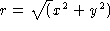
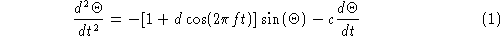

|
22.C:
|
22:
|
22.A:
|
|

To create a LaTeX document, you first open the source file in your favorite editor. To save some typing, edit the document skeleton.tex (this document contains the commands included in every LaTeX document, so you probably want to be careful and copy this file to another name before opening it). Notice that the file extension is .tex. Using this extension identifies the file as a LaTeX or TeX document.
The file skeleton.tex contains a number of commands:
\documentstyle{article}
\begin{document}
\end{document}
First, the \documentstyle statement sets a number of default formatting commands. As you learn more about LaTeX you may want to change this line or even start creating your own custom styles. The \begin and \end statements do exactly what they say, they tell LaTeX where to begin and end the document.
When you give text toLaTeX, it recognizes any set of characters separated by one or more spaces as a word, any period not following an upper-case letter to be the end of a sentence, and group of lines separated by blank lines to be a paragraph. Try adding some text on the line after \begin{document}. Now, try compiling it and viewing it.
Admittedly, that was a little bland, but now you are ready for the fun part, equations. In order for LaTeX to correctly interpret your equations, you must tell it that you wish to enter the math, displaymath or equation environments. The math environment is used for in line equations. Use the "$" symbol before and after your equation. For instance, the following text can be used to create 
can be used to create $r = \sqrt(x^2 + y^2)$
Enter the command in your file after the text you typed earlier. Then you can compile and view it.
LaTeX has many commands for different mathematical symbols. Notice how the \sqrt command automatically expanded the square root symbol to fit over the entire contents.
If you wish to place your equations on a separate line, you can use the displaymath environment. You use a \begin and \end statement to set up displaymath:
\begin{displaymath}
\frac{d^2 \Theta}{d t^2} = -[1+d\cos(2\pi ft)] \sin(\Theta) - c\frac{d\Theta}{dt}
\end{displaymath}
This creates . A few new functions you might want to notice:
| \frac{top}{bottom} | Displays a fraction. |
| \cos \sin | For trigonometric functions precede the function name with a \. |
| \Theta \pi | For Greek letters, precede the letter name with a \. For capital letters, capitalize the first letter of the name. |
Try adding this line to your file and see how LaTeX sets up the equation. Notice the spacing and symbol-size decisions that LaTeX makes automatically. Beautiful isn't it?
Now that you have seen how text and equations can be typeset in LaTeX, you are ready to create your own documents. There are, of course, many more special formats, symbols and functions in LaTeX. Nikos Drakos, at the University of Leeds has created a more comprehensive LaTeX tutorial, including a quick reference to many of the more popular LaTeX commands.
For the latest LaTeX news and tutorials, you may want to look at the TeX Users Group home page.
For those of you interested in using LaTeX to make your Web page publishing easier, the next section will explain how to convert LaTeX to HTML.
|
22.C:
|
22:
|
22.A:
|
|